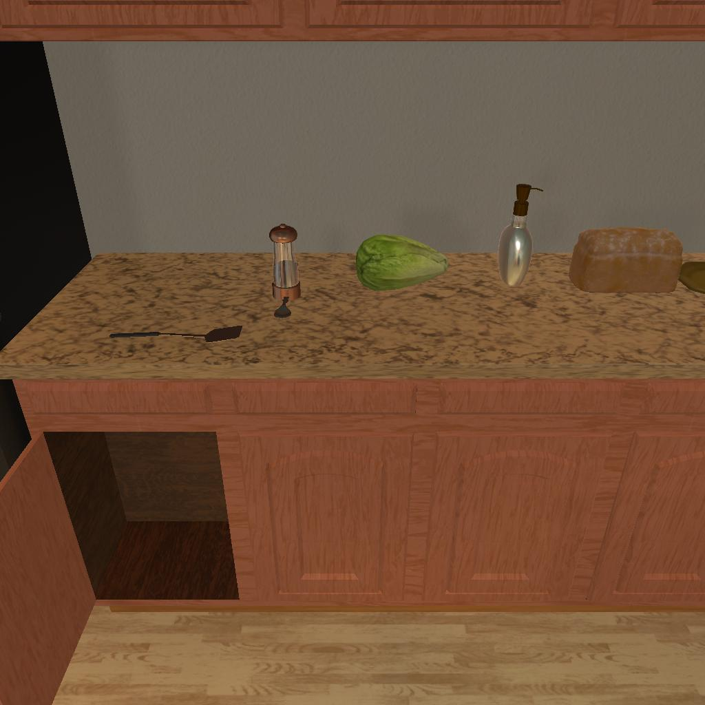

---------------------------------------------------------task: 23---------------------------------------------------------
--------------------------------------------------------------------------------------------------------------------------------------------------------------------
--------------------------------------------------------------------------------------------------------------------------------------------------------------------
Step:--------------------------------------------------------------------------9-------------------------------------------------------------------------------
----------------------------------------
VLM Prompt:
**Task**
Please perform as an embodied AI agent. Our final objective is to heat some mug and put it in coffeemachine. Below is the plan for completing the task, the current observation, alongside historical data and admissible actions for the next step. Please determine the best action for the next step!
**Plan**
Below is a detailed step-by-step plan to complete the task.
1. Find a mug.
2. Pick up the mug.
3. Find a microwave.
4. Heat the mug with the microwave.
5. Find a coffee machine.
6. Place the heated mug in the coffee machine.
**Current Observation**
Displayed is an image capturing the current position of the agent.
**History Information**
Displayed are the previous observations with their corresponding actions.
State 1:
1. Step Index in the Plan: 1
2. Objects: Countertop, Sink, Coffee Machine
3. Action: go to cabinet 1
State 2:
1. Step Index in the Plan: Unknown
2. Objects: Wooden Cabinet/Door
3. Action: open cabinet 1
State 3:
1. Step Index in the Plan: 1
2. Objects: Wooden Cabinet/Door
3. Action: go to cabinet 2
State 4:
1. Step Index in the Plan: 1
2. Objects: Wooden Cabinet/Door
3. Action: open cabinet 2
State 5:
1. Step Index in the Plan: 1
2. Objects: Wooden Cabinet
3. Action: go to cabinet 3
State 6:
1. Step Index in the Plan: 1
2. Objects: Wooden Cabinet Door (similar to State 5)
3. Action: open cabinet 3
State 7:
1. Step Index in the Plan: 1
2. Objects: Wooden Cabinet (cabinet 3)
3. Action: go to cabinet 4
State 8:
1. Step Index in the Plan: Unknown
2. Objects: Countertop, Fridge
3. Action: go to cabinet 5
State 9:
1. Step Index in the Plan: 1
2. Objects: Hammer, Lettuce, Soap Dispenser, Bread
3. Action: open cabinet 5
**Admissible Actions**
(1): go to cabinet 1
(2): go to cabinet 2
(3): go to cabinet 3
(4): go to fridge 1
(5): go to countertop 1
(6): go to cabinet 6
(7): go to cabinet 7
(8): go to drawer 1
(9): go to drawer 2
(10): go to cabinet 8
(11): go to drawer 3
(12): go to cabinet 9
(13): go to cabinet 10
(14): go to drawer 4
(15): go to microwave 1
(16): go to cabinet 11
(17): go to toaster 1
(18): go to cabinet 12
(19): go to cabinet 13
(20): go to cabinet 14
(21): go to cabinet 15
(22): go to countertop 2
(23): go to coffeemachine 1
(24): go to garbagecan 1
(25): go to countertop 3
(26): go to countertop 4
(27): go to sink 1
(28): go to stoveburner 1
(29): go to stoveburner 2
(30): go to stoveburner 3
(31): go to sinkbasin 1
(32): close cabinet 5
(33): take bread 1 from cabinet 5
(34): take lettuce 1 from cabinet 5
(35): take soapbottle 1 from cabinet 5
(36): take peppershaker 1 from cabinet 5
(37): take spatul1 from cabinet 5
(38): take plate 2 from cabinet 5
(39): take spoon 1 from cabinet 5
(40): take butterknife 1 from cabinet 5
**Analysis Guideline**
1. Analyze the history and current observation, and then determine our current step in the plan and our current place.
2. List all visible objects related to the task in the current observation, without summarizing any as "various items."
3. Analyze the objects in the current observation based on the history and the requirements for the current step, and then determine if we can complete the step with the current observation.
4. Analyze and decide on the most appropriate action to take.
5. Summarize the analysis using the following format: "Analysis: [The summarization of the analysis], The Most Appropriate Action: (i which is the integer.): [Selected action]"
**Notes**
1. We must complete each step of the plan in order and cannot skip steps when the previous ones are not finished.
2. For "Go to" actions listed as "go to xxx [n]", interpret this as there are n distinct actions available: "go to xxx 1", "go to xxx 2", ..., "go to xxx n". Select one specific action from these options instead of using "go to xxx [n]".
3. If receptacles such as drawers, cabinets, and so forth are closed in the current observation, we may try to open them.
4. Pay attention to synonyms and ensure clarity in the terms used.
5. We must determine and provide the single action which must be in the **Admissible Actions**.
6. If there is no history available, we are at the first step and the current place is "Unknown".
**Answer**
Please select the most suitable action by following the **Analysis Guideline**, keeping the above **Notes** in mind.
----------------------------------------
----------------------------------------
VLM Response:
Analysis: According to the history information, the agent is still at step 1 in the plan which is to 'Find a mug'. The agent has already attempted to find a mug by opening several cabinets (cabinet 1, 2, 3, and 5) but seems to have not found it yet. In the current observation, we see objects on the countertop which are hammer, lettuce, soap dispenser, and bread but no mug. Therefore, we still need to find a mug, which means we should continue searching in other cabinets or drawers. Among the admissible actions, there are several "go to cabinet" and "go to drawer" options, but since we have opened cabinet 5 last, we should close it before moving on to prevent any accidents or obstructions in the path.
The Most Appropriate Action: (32): close cabinet 5
----------------------------------------
----------------------------------------
>>> Refine VLM Response and Get Pure Action: close cabinet 5
----------------------------------------
-----------------------------------------------------------------
Running time: 9.569934844970703 seconds
Total Money: 0
-----------------------------------------------------------------
-----------------------------------------------------------------
Summarization Prompt:
**Context**
Analysis: Since there is no history information, we are at the first step in the plan, which is to find a statue. The current place is unknown. In the current observation, we see a floorlamp next to an armchair with a small table that has a small object on it, which could potentially be the statue we are looking for. Since the plan requires us to find a statue first and it appears there might be one on the table next to the armchair, we should investigate this object to determine if it is the statue we need.
The Most Appropriate Action: (1): go to armchair 1
**Summary**
1. Step Index in the Plan: 1
2. Objects: Floorlamp, Armchair, Small Table, Small Object (potential statue)
3. Action: go to armchair 1
**Context**
Analysis: According to the history information, the agent is still at step 1 in the plan which is to 'Find a mug'. The agent has already attempted to find a mug by opening several cabinets (cabinet 1, 2, 3, and 5) but seems to have not found it yet. In the current observation, we see objects on the countertop which are hammer, lettuce, soap dispenser, and bread but no mug. Therefore, we still need to find a mug, which means we should continue searching in other cabinets or drawers. Among the admissible actions, there are several "go to cabinet" and "go to drawer" options, but since we have opened cabinet 5 last, we should close it before moving on to prevent any accidents or obstructions in the path.
The Most Appropriate Action: (32): close cabinet 5
Please summarize the context by following above examples when providing the summary, and ensure that only the summary is included, without any extra explanation.
**Summary**
-----------------------------------------------------------------
-----------------------------------------------------------------
Summarization Response:
1. Step Index in the Plan: 1
2. Objects: Cabinets (1, 2, 3, 5), Hammer, Lettuce, Soap Dispenser, Bread
3. Action: close cabinet 5
-----------------------------------------------------------------
-----------------------------------------------------------------
Text Observation:You close the cabinet 5.
-----------------------------------------------------------------
UNSUCCEED